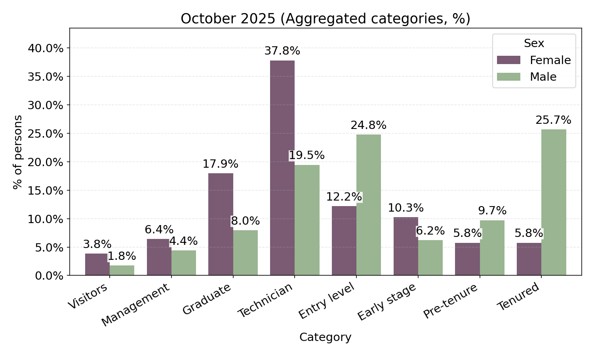
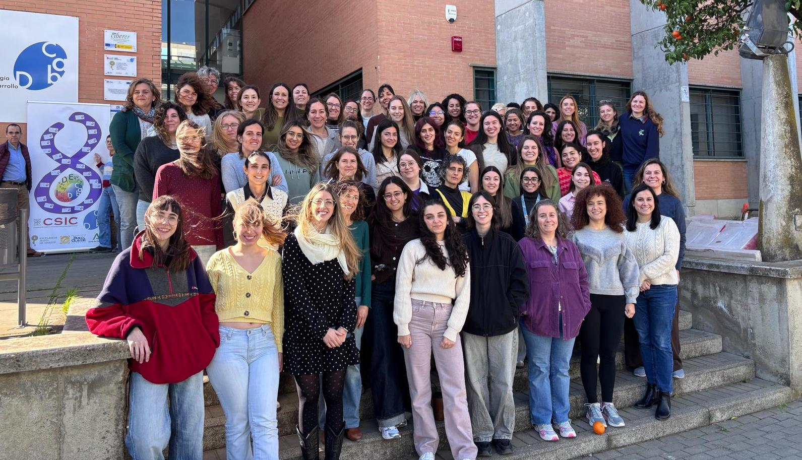
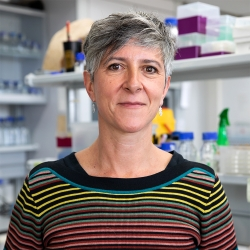
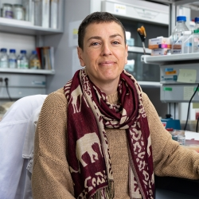
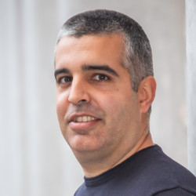
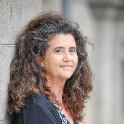
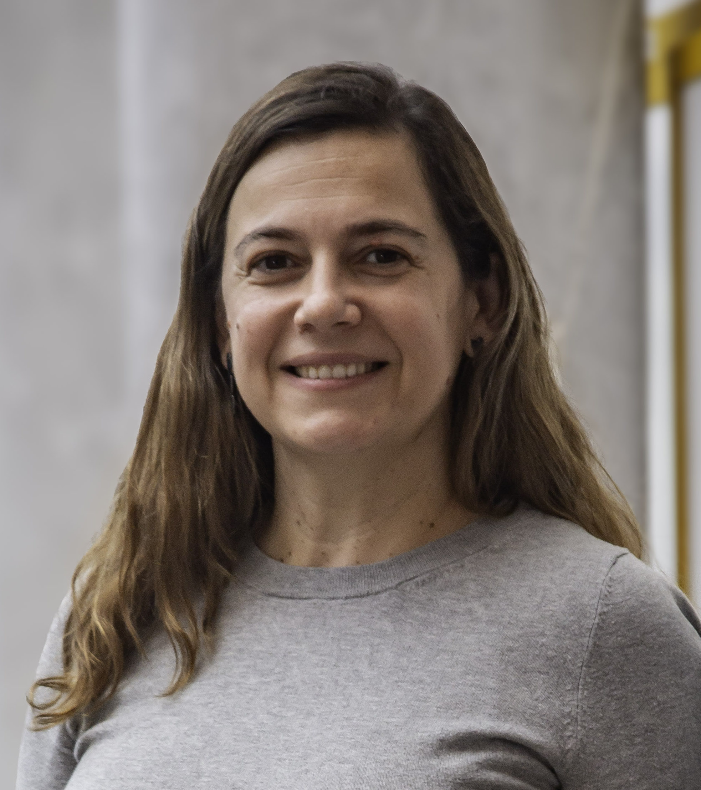
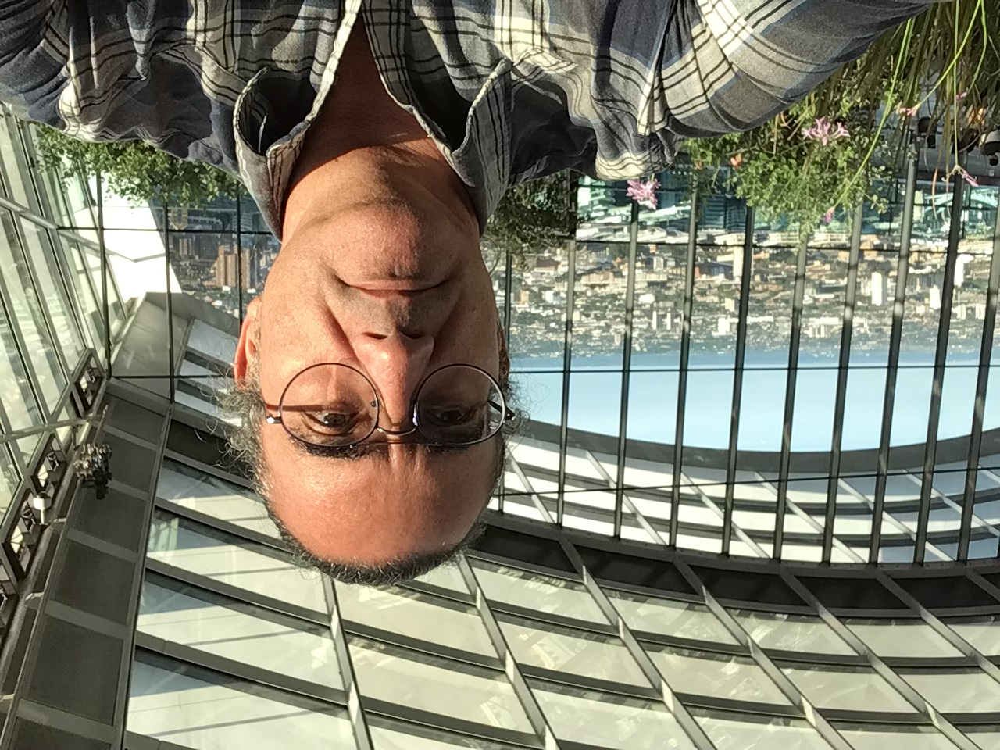
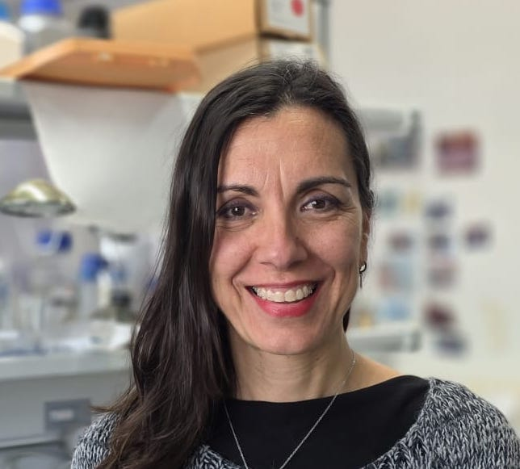
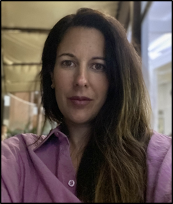

Identify
Surface the real barriers
Diagnose inequality, diversity and inclusion issues specific to CABD to ensure responses address lived realities.
Inclusive Science | Safer environment
The CABD EDI Committee mission is to advance towards gender equality and inclusion across our centre. We align local action with national protocols.
Women in numbers (data October 2025)

8 March 2026, Women at CABD

Our focus
Identify
Diagnose inequality, diversity and inclusion issues specific to CABD to ensure responses address lived realities.
Communicate
Maintain transparent pathways to report inequity and share our activities with the scientific community.
Act
Promote actions that secure fair access, inclusive culture and zero tolerance to harassment.
How we work
Key documents
Protocol
Latest protocol to ensure a safe, respectful workplace, including complaint pathways and precautionary measures.
Guide
Practical guidance to integrate sex/gender perspectives into research proposals and projects.
Plan
Framework of measures for equal opportunities across CSIC centres, including CABD.
Support
Official UPO protocols and guidance on harassment prevention, reporting channels and support measures.
Support
Email the committee for confidential advice or to suggest actions that improve equity and inclusion.
On the move
Milestones, actions and recognitions that show our EDI work in motion.
Facilities
A new inclusive WC is located at the first floor, to provide safe access for everyone.
A dedicated space for breast-feeding and/or wellness is available at CABD, located at the ground level.
Recognition
CABD participation in the SomMa EDI working group was renewed with commendation for training programs.
Training
Hands-on session for staff and students on how to detect, prevent and report harassment situations.
Events
Activity
Date: 30 October 2025
Location: Rosalind Franklin Auditorium, CABD
Speakers: Committees
Objective: Build synergies.
View posterTalk
Context: 25N
Date: 19 November 2025
Location: Rosalind Franklin Auditorium, CABD
Speaker: Candelaria Terceño Solozano
Objective: Present the UPO protocol against sexual harassment and introduce the UPO Equality Committee, its location, staff and contact methods.
View posterTalk
Context: 25N
Date: 26 November 2025
Location: Rosalind Franklin Auditorium, CABD
Speaker: Reyes Pueyo
Objective: Present the CSIC protocol against sexual harassment, explain how to act and make visible different types of sexual harassment.
Talk / Workshop
Context: CABD Christmas event
Date: 12 December 2025
Location: Rosalind Franklin Auditorium, CABD
Speaker: Yolanda Domínguez
Objective: Show how the images we see every day shape the way we view the world and how that affects sex-based social inequalities.
Talk / Workshop
Date: 6 March 2026
Context: 8M
Location: Rosalind Franklin Auditorium, CABD
Speaker: Reyes Pueyo García
Objective: Raise awareness among researchers about the need to identify our biases.
View posterWorkshop
Date: TBA
Context: FEVIDA event
Location: Rosalind Franklin Auditorium, CABD
Speaker: TBA
Objective: TBA
Watch videoAllies
CABD is a joint centre of Universidad Pablo de Olavide, CSIC and Junta de Andalucia. We collaborate with their equality units and the SomMa network to scale our impact.
Need help?
Use our confidential channel. We follow the CSIC protocol to ensure safety, dignity and swift measures for anyone involved.
Who we are
Meet the people coordinating equity, diversity and inclusion at CABD.

Marta Artal
Sol Sotillos
Pablo Mier
Ana M. Rojas
Ana Bastos Neto
Juan Tenorio
Marivi Cascajo
Ana Isabel Platero